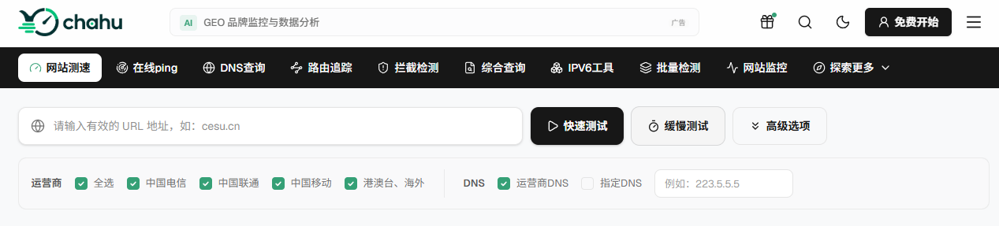
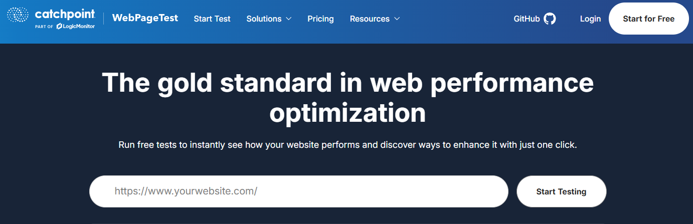
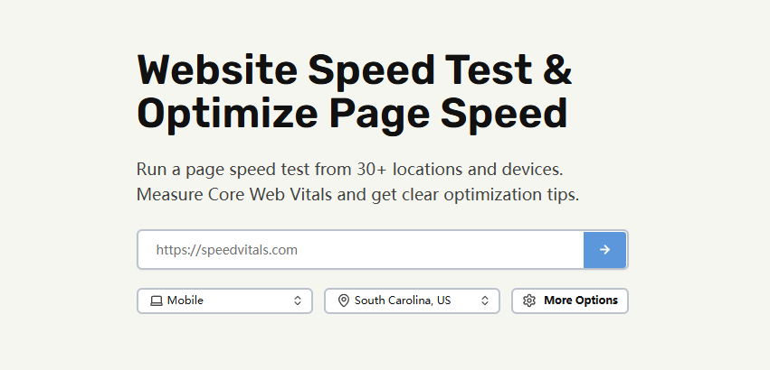

网站明明部署了 CDN，服务器配置也不差，自己打开时感觉挺快，为什么换个地区访问就开始卡顿？更让人困惑的是，同一个网站放到不同的网站测速工具里，得到的结果往往完全不一样。
比如 Ping 延迟可能只有 30ms，但 Google PageSpeed Insights 测出来却只有六七十分；在国内节点测试响应飞快，换到新加坡、美国或者欧洲节点，TTFB 又突然升到几百毫秒；换一个测速平台，页面加载时间又是另一组数字。
出现这种情况其实再正常不过。因为网站测速本来就不是只测一个单一指标。不同工具关注的侧重点完全不同：有的主要看网络延迟和运营商线路，有的关注网页前端资源加载，有的专门检查 Core Web Vitals，还有的用来观察全球节点、DNS 解析、TCP/TLS 握手以及 CDN 调度情况。
所以，如果你正在找网站测速工具，首先要明确的不是哪个工具“最准”，而是你到底想测什么。下面整理了目前最常用的 8 款网站测速工具，结合实际使用场景讲透它们适合解决什么问题，以及拿到数据后该怎么分析。
一、网站测速到底是在测什么？
简单来说，网站测速工具就是通过不同地区、不同网络环境或模拟浏览器去访问你的网站，记录从建立连接到页面加载完成产生的各项性能数据。
常见的测速指标包括：
Ping / RTT（网络延迟）
DNS 解析时间
TCP 建连与 TLS 握手时间
TTFB（首字节响应时间）
HTML 下载时间
图片、CSS、JavaScript 加载时间
页面完整加载时间
LCP、INP、CLS 等 Core Web Vitals
CDN 节点命中情况
不同地区、运营商的访问速度与丢包率
这也是为什么不同工具测出来的结果差异很大。像查壶（chahu）这类工具适合看不同地区和运营商的网络表现，而 Google PageSpeed Insights 更关注浏览器端的页面渲染和 Core Web Vitals。
按实际使用场景，这些工具大致可以分为四类：
网络与节点测速工具：解决“网站从某个地方访问到底快不快”的问题，重点看 Ping、DNS、丢包和多运营商节点表现（如查壶、17CE、BOCE）。
页面性能测速工具：关注浏览器拿到网页后的加载过程，重点看 LCP、INP、CLS、JS/CSS 阻塞等（如 PageSpeed Insights、GTmetrix）。
深度网页性能分析工具：排查具体是哪个请求拖慢了页面，把 DNS 到资源加载的全过程拆开看瀑布图（如 WebPageTest）。
全球网站性能测试工具：针对海外和跨境业务，测试全球 TTFB、跨区域访问和海外网络质量（如 WebPageTest、SpeedVitals、Pingdom）。
二、网站测速主要看哪些指标？
很多人测速时只盯着一个总评分看，这很容易误判。排查网站变慢的原因，需要结合以下几个指标：
1. Ping / RTT
Ping 反映的是网络链路的延迟。比如北京访问 35ms、上海 28ms、新加坡 82ms、美国 180ms，数值越低说明网络距离越近或线路质量越好。
但 Ping 低不等于页面打开快。如果 Ping 只有 30ms，但 TTFB 却高达 850ms，说明网络没问题，而是服务器收到请求后处理太慢。这时应该去查程序逻辑、数据库查询、源站负载或缓存策略，而不是死磕网络线路。
2. DNS 解析时间
浏览器访问网站的第一步就是通过 DNS 把域名转成 IP。如果 DNS 解析本身就很慢，后面的连接和资源下载都会被推迟。对于用了 CDN 的网站，DNS 还承担着把用户调度到离他最近节点的作用。如果上海访问很快而北京很慢，往往就是 DNS 或 CDN 调度出了问题。
3. TCP 与 TLS 连接时间
现代网站基本都启用了 HTTPS，在发送 HTTP 请求前，必须经过“DNS 解析 → TCP 连接 → TLS 握手”的过程。如果用户距离服务器很远，跨国网络往返（RTT）会把连接耗时大幅放大，这也是为什么跨区域业务非常依赖 CDN 节点接入。
4. TTFB
TTFB 是指发出请求到收到服务器返回第一个字节的时间。TTFB 高通常有几个原因：物理距离远、源站计算慢、数据库查询卡顿、动态接口耗时长或者 CDN 未命中缓存（MISS）。如果 TTFB 长达一两秒，去优化图片压缩是没有任何效果的。
5. 页面完整加载时间
即使 TTFB 很快，如果页面里塞了 8MB 的高清大图、几十个未压缩的 JS 脚本或繁重的第三方 SDK，用户依然要等很久才能看到完整页面。因此，服务器响应速度和前端资源加载必须结合起来看。
6. Core Web Vitals
这组指标直接关系到 Google SEO 和用户实际体验，主要包括：
LCP（最大内容渲染）：页面主要内容什么时候加载出来。
INP（交互到下次绘制）：用户点击、按键后页面的响应速度。
CLS（累积布局偏移）：页面加载过程中内容有没有无故跳动。
三、2026年常用 8 款网站测速工具详解
这 8 款工具基本覆盖了日常排查网站性能时的各种需求。其实它们之间没有绝对的“谁更好”，关键还是看你的具体使用场景和想解决的问题。
1. chahu
如果你的网站主要服务国内用户，或者需要同时监测国内和海外不同节点的访问表现，chahu是个很实用的工具。
它和 PageSpeed Insights 的区别在于：chahu不侧重给网页整体打分，而是帮你直接看真实的线路表现：中国电信、联通、移动，以及港澳台和海外节点访问你的网站时究竟快不快。
对于用了 CDN 的网站，这种多节点测试能帮大忙。比如测试后发现上海电信 35ms、广州移动 42ms，但北京联通却要 126ms，这就能一眼看出不是整个网站都慢，而是某个运营商或者特定地区的 CDN 节点调度出了问题。除了测速，chahu也能用来跑 Ping 和 DNS 检测。
适合场景：检查各省份访问状态、对比三网线路、测试 CDN 部署前后效果、排查海外与跨区域访问情况、定位特定运营商卡顿等。对于国内业务或 CDN 配置排查，适合作为第一轮筛查工具。

2. Google PageSpeed Insights
如果你的网站需要做 Google SEO，这个工具属于必用项。它的价值不在于告诉你“网页几秒能打开”，而是深度剖析用户实际的加载体验。
它会直接给出 Core Web Vitals 数据（LCP、INP、CLS 等），并针对 JavaScript、CSS、图片、渲染阻塞资源和缓存策略给出明确的优化建议。同时，它会分别提供 Mobile 和 Desktop 两套评估结果，这也是为什么移动端得分往往比桌面端低不少。
最大误区：很多人看到 Performance 只有 70 分就觉得网站彻底废了。其实这只是在特定模拟环境下计算出来的参考分。一个 70 分的网站在真实用户手机上可能依然流畅，而一个 95 分的网站如果遇到了跨国线路拥堵，海外用户一样觉得卡。它本质上是一个前端性能与 SEO 体验优化指导工具。
3. GTmetrix
如果 PageSpeed Insights 告诉你“网页性能有问题”，但你不知道具体卡在哪，GTmetrix 就是用来刨根问底的。
它会把网页加载用到的所有资源（HTML、CSS、JS、图片、第三方脚本等）罗列出来，最核心的功能就是 Waterfall 瀑布图。在瀑布图里，你可以清楚地看到每个文件的 DNS 解析、建连、等待响应（Wait）和下载时间。比如一个analytics.js卡了 850ms，或者某个图片拖了 1.4s，一眼就能揪出来。
适合群体：WordPress 站长、前端开发、电商与企业官网运维。适合用来专门排查“到底是什么资源拖慢了页面”。
4. WebPageTest
官网：https://www.webpagetest.org/
WebPageTest 在性能测试领域属于硬核专业级工具。它最大的优势是测试环境定制化程度极高，可以自由选择国家地区、浏览器类型、真实设备以及网络带宽。
它能把“DNS → TCP → TLS → TTFB → 网页资源加载”的完整请求链路剥离得非常清晰。更棒的是，它支持分别测试“首次访问”和“重复访问”，这对于验证浏览器缓存、CDN 静态资源复用效果非常有效。
适合群体：前端性能优化工程师、大型 Web 应用开发者、跨境电商技术团队。它的数据极其全面，不过对新手站长来说会有一定的上手门槛。

5. Pingdom Website Speed Test
Pingdom 的特点就是简单直观。如果你不想一上来就研究一堆复杂的技术指标，只想快准狠地了解页面加载用了多久、整体有多大、发了多少请求、哪些资源最耗时，它用起来非常顺手。
它会把请求拆解为 DNS、SSL、Connect、Wait、Receive 等阶段，即便不是专业工程师，也能轻松看懂页面卡在了哪个环节。非常适合博客、企业官网和落地页的日常快速巡检。
6. SpeedVitals
做海外市场或跨境业务的话，SpeedVitals 很适合加入工具箱。它专注于全球多地区的性能测试，重点评估全球各地的 TTFB（首字节响应时间）、Core Web Vitals 和资源加载瀑布图。
举个例子，服务器如果部署在洛杉矶，美西测试的 TTFB 可能只要 45ms；但如果新加坡用户测试要 280ms，日本要 220ms，那就说明全球访问体验存在短板。目标用户分布在多个国家时，只测服务器本地速度没有任何参考价值。

7. 17CE
17CE 是国内站长和运维人员非常熟悉的多节点测速平台，支持 GET、Ping、MTR、Traceroute 和 DNS 等检测。
它对国内网站的价值同样在于观察多运营商之间的体验差异。比如北京电信和上海联通都正常，但广州移动延迟突然飙升，就能迅速锁定是移动线路的路由问题，而不是源站瘫痪。
8. BOCE
BOCE 的功能相对更加综合，除了网站加载测速，它还集成了路由追踪、IPv6 检测、SSL 证书诊断和域名异常排查等功能。
如果你只是想看网页加载几秒，GTmetrix 或 Pingdom 会更直接；但如果遇到的问题已经上升到了“到底是 DNS 报错、IP 被封、路由绕路，还是 SSL 握手失败”，BOCE 这种综合网络诊断工具用起来会更省心。
四、8 款测速工具横向对比与选型建议
测速工具 | 主要用途 | 国内多运营商 | 全球节点 | Core Web Vitals | 瀑布图分析 | 推荐适用群体 |
|---|---|---|---|---|---|---|
chahu | 网络、节点、线路测试 | 强 | 支持 | 强 | 强 | 国内站点、跨境业务、CDN运维 |
PageSpeed Insights | SEO、页面体验诊断 | — | — | 强 | — | 前端开发、SEO优化人员 |
GTmetrix | 页面资源与加载分析 | 一般 | 支持 | 支持 | 强 | 站长、前端优化、电商站点 |
WebPageTest | 深度性能与链路剖析 | 一般 | 强 | 支持 | 强 | 性能专家、大型 Web 应用 |
Pingdom | 页面加载基础测试 | — | 支持 | 一般 | 支持 | 中小型站长、企业官网 |
SpeedVitals | 全球性能与 TTFB 检测 | — | 强 | 强 | 强 | 海外业务、跨境电商、SaaS |
17CE | 国内线路与节点检测 | 强 | 支持 | — | — | 运维人员、CDN测试 |
BOCE | 综合网络与域名诊断 | 强 | 强 | — | — | 运维工程师、站长 |
选型建议：
查排查节点与线路问题：优先用 查壶、17CE 或 BOCE。
排查页面资源与加载瓶颈：组合使用 PageSpeed Insights + GTmetrix。
排查海外或全球访问体验：选用 WebPageTest + SpeedVitals。
五、为什么不同工具测出来的结果完全不同？
同一个网站在不同工具里测出完全不同的数字，通常是由以下几个因素造成的：
测试节点位置不同：网络访问受物理距离影响很大。广州节点测香港源站可能只需 30ms，而从美国节点发起请求可能就需要 150ms 以上。
运营商线路差异：特别是在国内，电信、联通、移动的跨网调度和节点质量各不相同，同一个 CDN 节点在不同运营商下的延迟可能有很大差距。
设备与浏览器性能不同：桌面端高性能 CPU 执行 JavaScript 只需要几毫秒，而在低端移动设备上可能需要几百毫秒，这直接拉开了移动端和桌面端的评分差距。
实验室环境 vs 真实用户环境：测速工具大多是在受控的实验室网络下模拟访问，而真实用户可能使用的是弱网 4G、老旧手机或拥堵的 Wi-Fi。
CDN 缓存命中状态（HIT / MISS）：首次访问时 CDN 节点需要回源拉取（MISS），耗时较长；二次访问直接读取节点缓存（HIT），速度极快。如果测速时没考虑到缓存状态，就很容易误判性能。
六、正确测试网站速度的 6 个步骤
要得出客观有价值的测速结果，建议按照以下顺序逐步排查：
明确你的核心用户在哪里：如果 80% 的客户在东南亚，去测美国节点的响应就没有多大意义。
先测网络层：用查壶或 17CE 跑一遍 Ping 和 DNS，看看全国或目标区域的延迟与丢包率。如果只有某个省份慢，重点检查节点调度；如果所有地方都慢，再去查源站。
检查 TTFB：看是服务器响应慢还是页面太重。TTFB 短但加载慢，说明问题在前端资源；TTFB 长达数秒，说明问题在后端逻辑、数据库或回源链路上。
用 PageSpeed Insights 评估页面体验：排查渲染阻塞、未压缩图片以及影响 Core Web Vitals 的因素。
查看 GTmetrix 或 WebPageTest 的 Waterfall：找出具体拖慢加载的罪魁祸首（比如某个 5MB 的图片、加载缓慢的第三方 SDK 或卡顿的 API 接口）。
优化前后保持测试条件一致：做对比测试时，务必保持相同的节点、设备类型、网络环境和测试时间段，否则得出的数据变化可能根本不是优化带来的。
七、常见速度问题的优化思路
测速不是为了看个分数图个心理安慰，关键是拿到数据后知道从哪下手。不同的性能瓶颈，对应的解决办法完全是两码事：
首字节响应（TTFB）卡顿： 别急着去压缩网页图片，先查服务器。看看 CPU 和内存是不是跑满了，数据库有没有慢查询，或者后端代码是不是逻辑太绕。把服务端缓存（如 Redis、页面静态化）开起来，同时给静态资源配置好 CDN 缓存，尽量减少请求直接打回源站。
图片加载拖后腿： 图片往往是吃带宽的“大户”。格式上尽量换成 WebP 或 AVIF，体积能小一大截；尺寸较大的首屏图做好响应式适配，非首屏图片直接加Lazy Load延迟加载；再配合 CDN 的图片处理与边缘分发，加载速度提升会非常明显。
JavaScript 阻塞渲染： 很多网站不是网速慢，而是被浏览器里的脚本给卡死的。先把那些没用的第三方追踪代码、广告弹窗、过期的客服插件清理掉；剩下的非核心脚本，统统加上async或defer让它们异步加载，别挡着页面主框架渲染；大型项目再做一下代码分割（Code Splitting），按需加载。
海外用户访问慢： 服务器如果在美国，亚洲用户直接连过去肯定慢，这时候单纯花钱升级服务器配置几乎没效果，物理距离的延迟是硬伤。正确做法是搞全球 CDN 节点布局，配合 Anycast 动态路由和精准的 DNS 调度，让海外用户直接就近接入最近的边缘节点。
只有某个运营商卡顿： 比如电信、联通打开飞快，唯独移动用户反馈卡。这种情况根本不需要动页面代码，大概率是 CDN 厂商的 BGP 线路不够好，或者跨网调度把移动流量切到了质量差的节点上。直接找 CDN 服务商开工单，调换调度节点或优化线路策略就行。
网站速度从来就不是一个固定的死数值。服务器响应快不等于页面渲染顺畅，Ping 值低也不代表全球用户打开都流畅。搞清楚你的用户群在哪、业务场景是什么，再用对应的工具按步骤排查，才能把钱和精力用在刀刃上。
常见问题
1. Ping 延迟很低，为什么页面打开速度依然很慢？
Ping 只代表网络管道通不通，不代表页面渲染速度。Ping 值低但页面慢，通常是因为服务器处理逻辑慢（TTFB 高，如数据库查询卡顿），或者是前端加载了过多未压缩的大图和第三方 JavaScript 脚本阻塞了浏览器渲染。
2. Google PageSpeed Insights 分数低，会影响网站 SEO 排名吗？
不一定。 PageSpeed Insights 的跑分属于实验室模拟数据，谷歌真正看重的是来自真实用户的 Core Web Vitals（体验核心指标）。只要实际用户的 LCP、INP、CLS 指标达标，跑分稍低对排名的影响非常有限。
3. 为什么移动端测速得分通常比桌面端低？
测速平台在评估移动端时，会故意模拟中低端手机的 CPU 算力和较慢的网络（如 4G）。加上手机处理 JavaScript 脚本的能力较弱，如果网站未针对移动端优化图片体积和渲染阻塞，移动端得分就会明显偏低。
4. 全球多地区业务，为什么不能只参考本地测速数据？
网络传输受物理距离和海底光缆限制。服务器在美西，本地访问极快，但欧洲或东南亚用户访问时数据包需要经过十几个路由跳转。针对跨境业务，必须使用 SpeedVitals 或 WebPageTest 等多国家节点工具排查全球延迟。
5. 如何通过 Waterfall（瀑布图）排查性能瓶颈？
重点看三点：横向拉长的线条表示该资源体积过大（需要压缩）；长段等待区（Waiting/TTFB）表示服务器响应慢或接口卡顿；阶梯状阻塞说明前面的 CSS/JS 阻塞了后方资源的加载（需添加async或defer异步加载）。
6. 网页图片已压缩，LCP为什么依然不达标？
除了图片体积，LCP 慢通常还因为：没有设置预加载（建议在<head>中添加<link rel="preload">）；首屏大图错误设置了延迟加载（Lazy Load）；或者存在渲染阻塞的 CSS/JS 文件导致浏览器无法及时绘制图片。